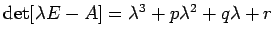
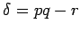
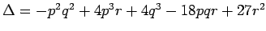
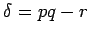
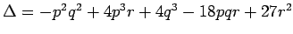

Inhalt Index DeskTop Bronstein

 Dynamische Systeme und Chaos Gewöhnliche Differentialgleichungen und Abbildungen Qualitative Theorie gewöhnlicher Differentialgleichungen Invariante Mannigfaltigkeiten
Dynamische Systeme und Chaos Gewöhnliche Differentialgleichungen und Abbildungen Qualitative Theorie gewöhnlicher Differentialgleichungen Invariante Mannigfaltigkeiten


Die Differentialgleichung (17.1) mit der hyperbolischen Ruhelage 0 für n = 3 gelte A = Df(0) und  sei das charakteristische Polynom von  . Mit den Bezeichnungen  und  (Diskriminante des charakteristischen Polynoms) sind die verschiedenen Ruhelagetypen im Folgenden aufgeführt. Die dazugehörigen Phasenporträts sind links jeweils für die erste Zeile, rechts für die zweite Zeile dargestellt.
. Mit den Bezeichnungen  und  (Diskriminante des charakteristischen Polynoms) sind die verschiedenen Ruhelagetypen im Folgenden aufgeführt. Die dazugehörigen Phasenporträts sind links jeweils für die erste Zeile, rechts für die zweite Zeile dargestellt.